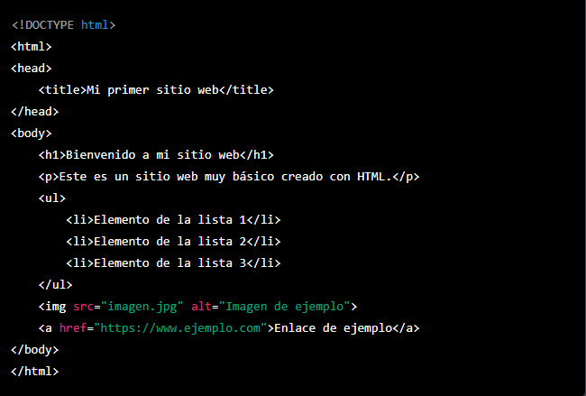

HTML es el acrónimo de "Hypertext Markup Language" (Lenguaje de Marcado de Hipertexto, en español) y es el lenguaje estándar utilizado para crear páginas web en la World Wide Web.
HTML utiliza una serie de etiquetas o marcas que se utilizan para definir la estructura y el contenido de una página web, permitiendo la inclusión de elementos como texto, imágenes, enlaces, videos y otros tipos de medios.
El código HTML se escribe en un archivo de texto plano y es interpretado por un navegador web, que lo convierte en una página visual que los usuarios pueden ver y navegar a través de ella. HTML es un lenguaje de marcado relativamente simple y es uno de los elementos fundamentales de la creación de sitios web modernos.
Historia de Html
HTML, o Lenguaje de Marcado de Hipertexto, tiene una historia que se remonta a los primeros días de la World Wide Web en la década de 1980.
En 1989, Tim Berners-Lee, un científico de la computación británico que trabajaba en el CERN en Suiza, desarrolló el concepto de la World Wide Web, una red de información global que permitiría a los usuarios navegar y acceder a información de manera intuitiva y fácil.
Berners-Lee desarrolló el primer navegador web, llamado WorldWideWeb, que fue capaz de mostrar páginas web en un formato de texto simple utilizando un lenguaje de marcado muy básico. Este lenguaje de marcado se convirtió en la base para lo que más tarde se conocería como HTML.
A medida que la World Wide Web crecía en popularidad, surgieron nuevas versiones de HTML que incluían características más avanzadas, como imágenes, formularios, tablas y marcos. La versión más reciente de HTML es HTML5, que fue lanzada en 2014 y es compatible con una amplia gama de tecnologías web, como CSS y JavaScript.
Porqué HTML 5
Existen varias razones por las que HTML5 fue desarrollado y se convirtió en la última versión del lenguaje de marcado de hipertexto más popular utilizado para la creación de sitios web. Algunas de las principales razones son:
- Mejoras en la funcionalidad: HTML5 ofrece muchas mejoras en la funcionalidad en comparación con sus predecesores. Algunas de las características más importantes incluyen la capacidad de integrar fácilmente audio y video en una pagina web, soporte para gráficos vectoriales escalables (SVG), capacidades de almacenamiento local y mejoras en el manejo de formularios y contenido multimedia.
- Mejoras en la accesibilidad: HTML5 también fue diseñado con la accesibilidad en mente, lo que significa que las páginas web creadas con HTML5 son más fáciles de navegar y utilizar para personas con discapacidades visuales y otros tipos de discapacidad.
- Mayor compatibilidad con dispositivos móviles: HTML5 fue diseñado para ser compatible con una amplia variedad de dispositivos, incluyendo teléfonos inteligentes y tabletas. Esto significa que los desarrolladores pueden crear sitios web que sean compatibles con dispositivos móviles sin tener que crear una versión separada del sitio web.
- Estándares web actualizados: HTML5 fue desarrollado para estar en línea con los estándares web actuales y futuros, lo que lo hace más fácil de usar y compatible con otros lenguajes web como CSS y JavaScript.
Ejemplo:
